看图片，先跟读音节，再大声朗读。Look at the pictures, listen and repeat the syllables, then read aloud.Посмотрите на картинки, послушайте и повторите слоги, затем прочитайте вслух.
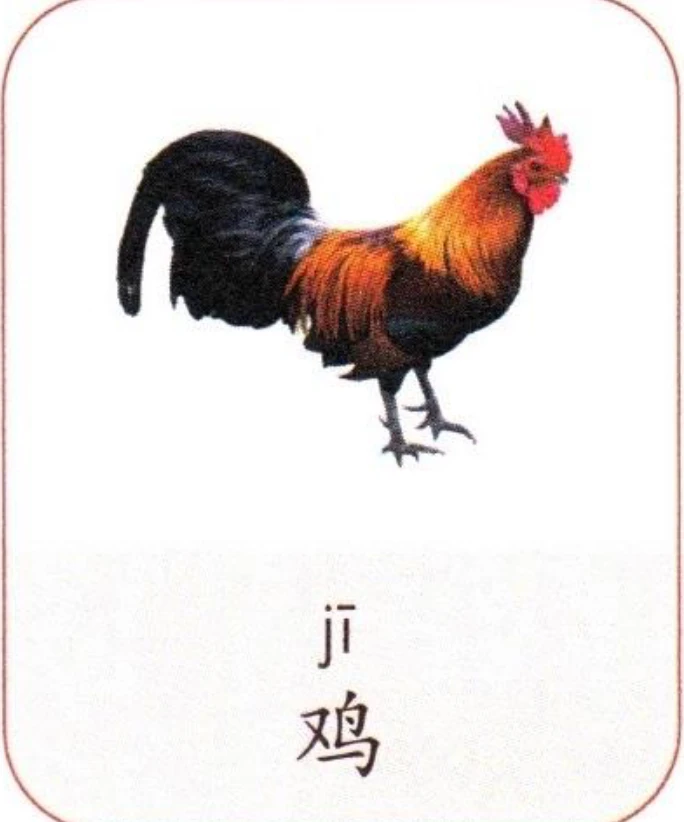
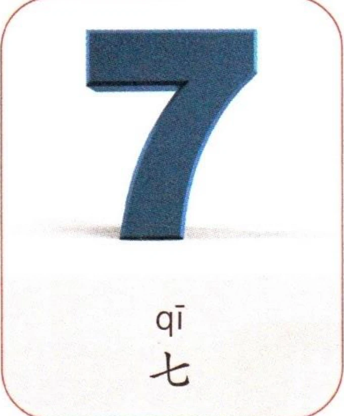
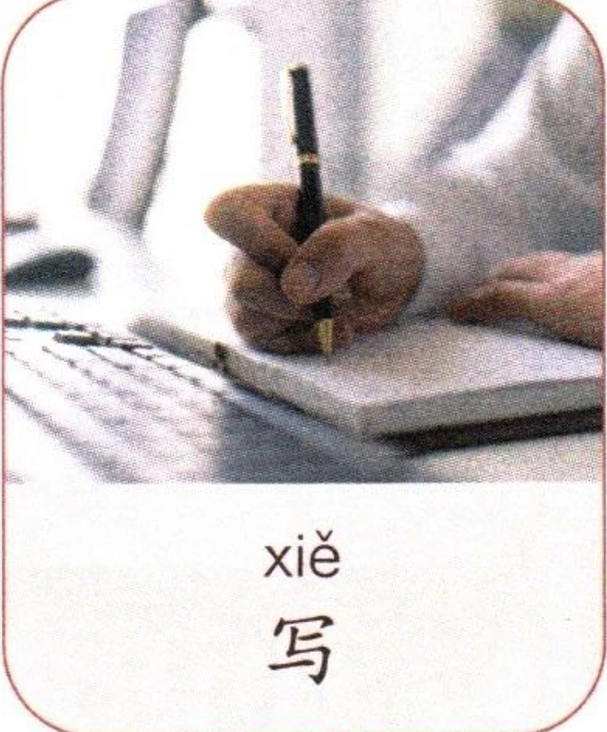
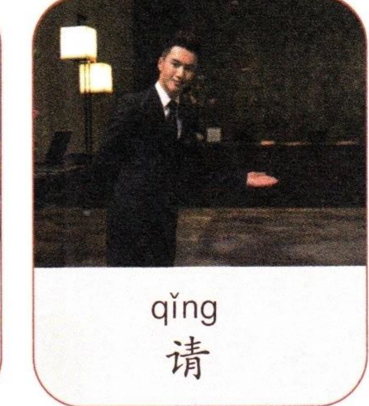
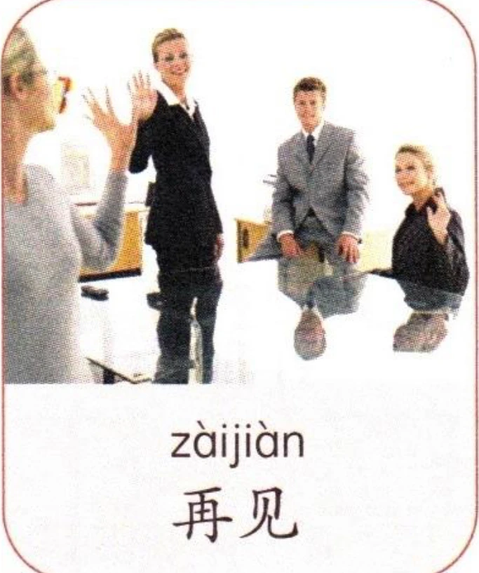
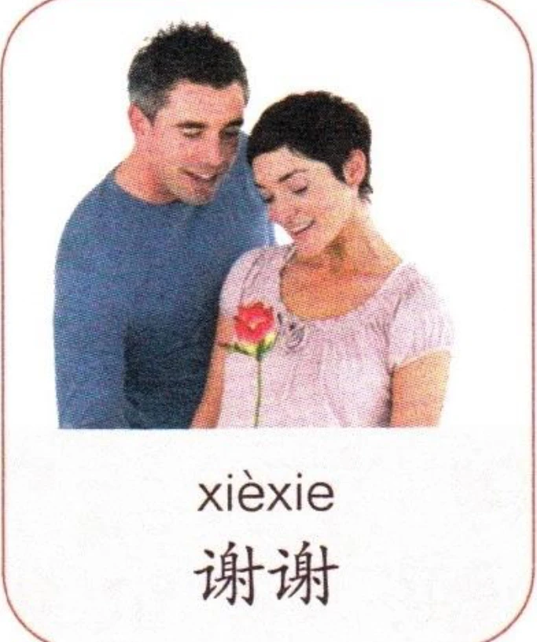
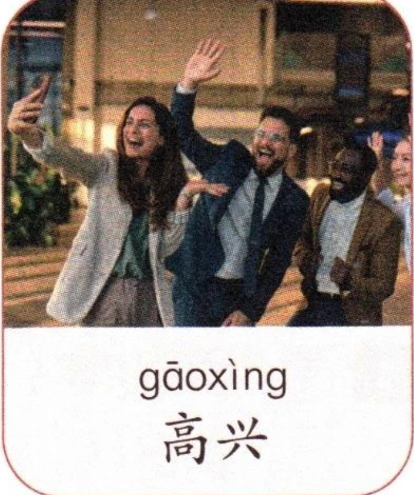
2拼写规则Spelling RulesПравила правописания
(1)韵母“i、u、ü”单独成音节时的写法Writing the finals “i”, “u”, and “ü” as independent syllablesНаписание финалей “i”, “u” и “ü” как самостоятельных слогов
韵母“i、u、ü”单独成音节时，写成“yi、wu、yu”。When the finals “i”, “u”, and “ü” stand alone as syllables, they are written as “yi”, “wu”, and “yu” respectively.Когда финали “i”, “u” и “ü” выступают как самостоятельные слоги, они пишутся как “yi”, “wu” и “yu” соответственно.
先跟读音节，再大声朗读。Listen and repeat the syllables, then read aloud.Послушайте и повторите слоги, затем прочитайте вслух.
看图片，先跟读音节，再大声朗读。Look at the pictures, listen and repeat the syllables, then read aloud.Посмотрите на картинки, послушайте и повторите слоги, затем прочитайте вслух.
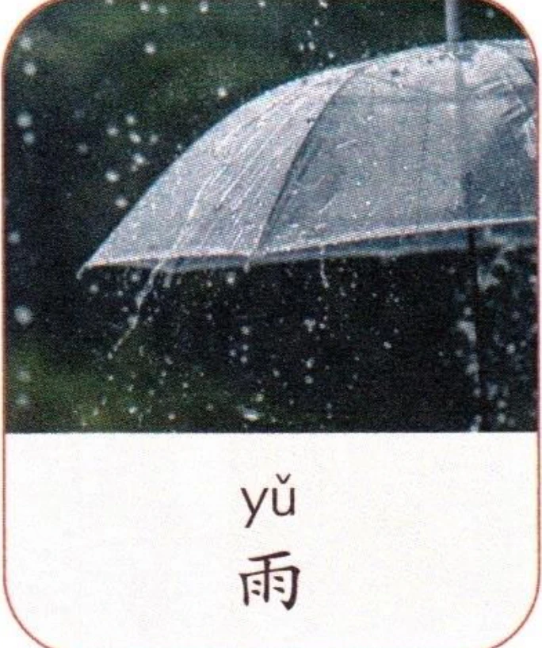
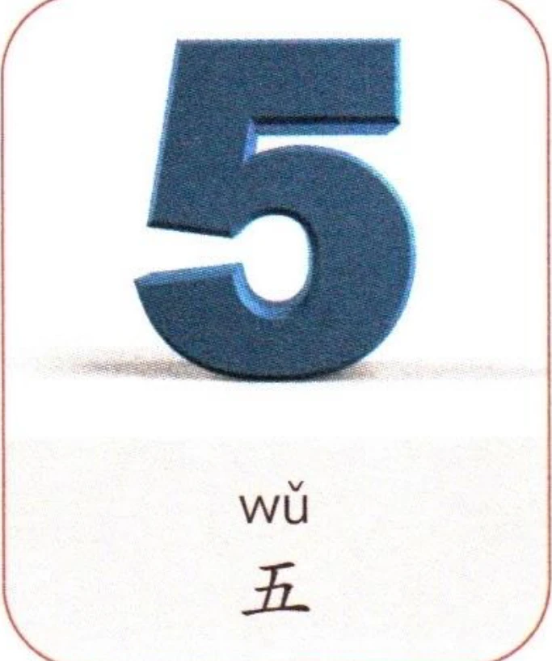
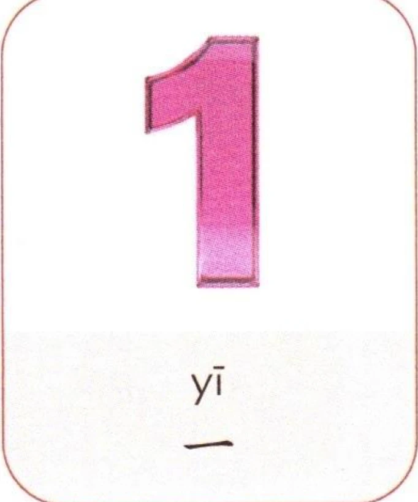
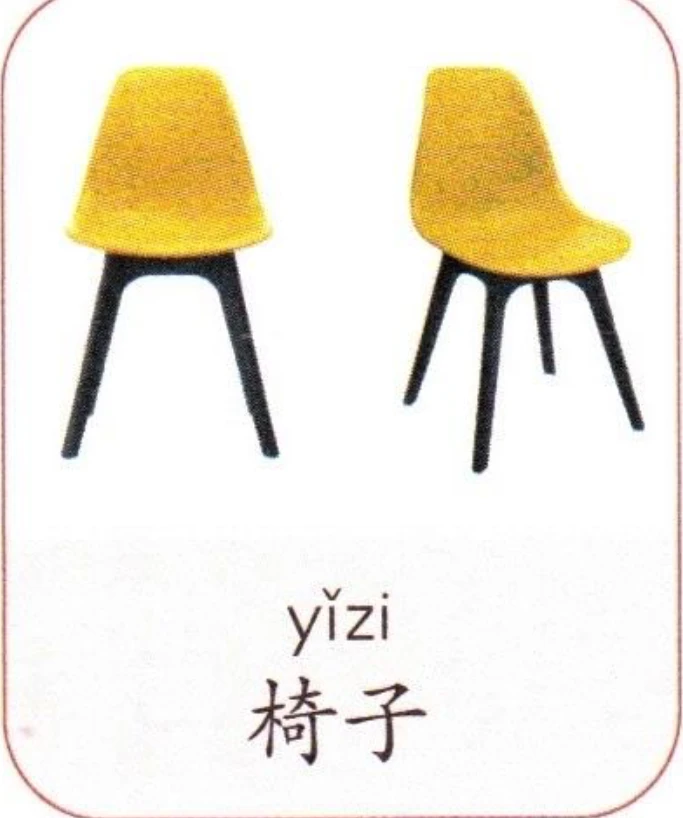